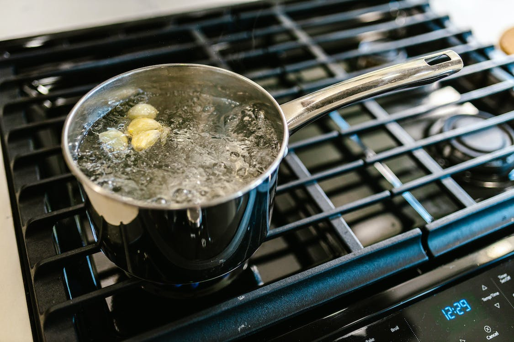
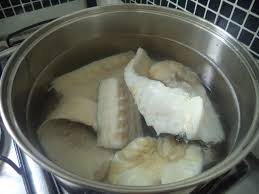
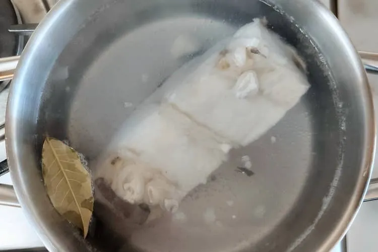
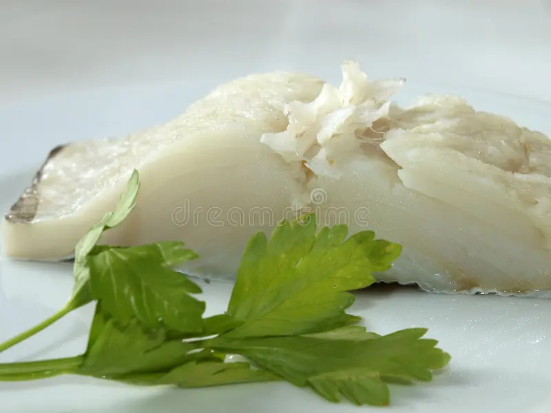
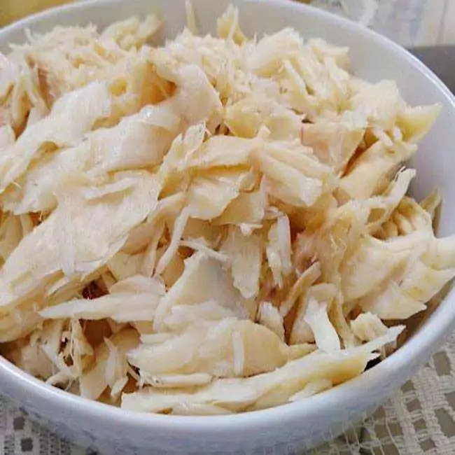
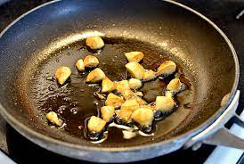
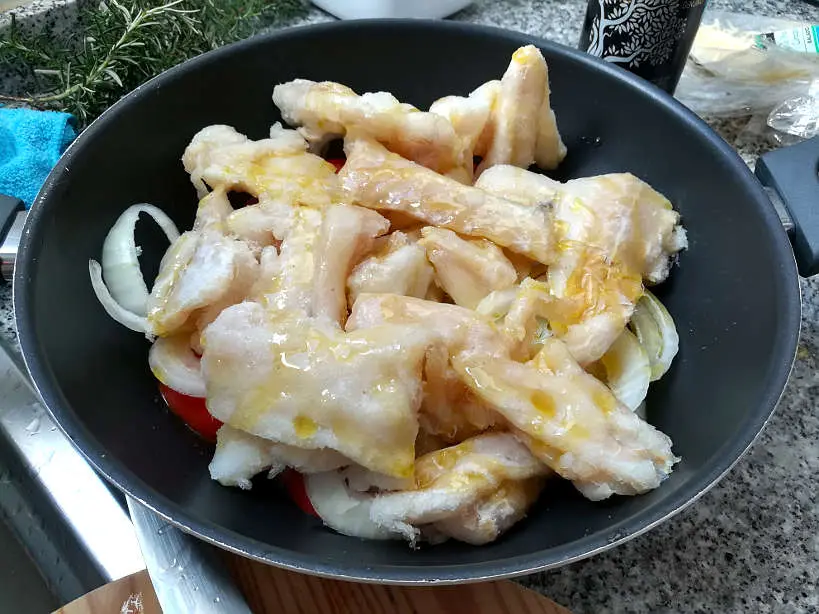
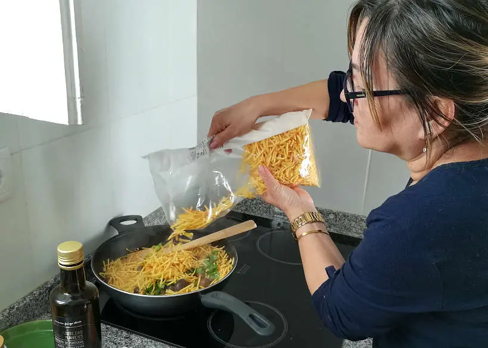
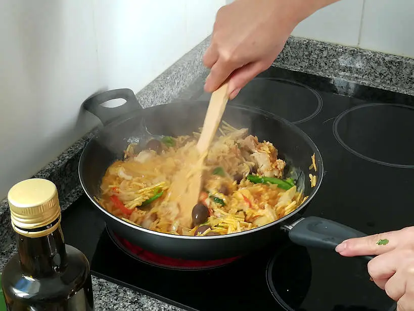
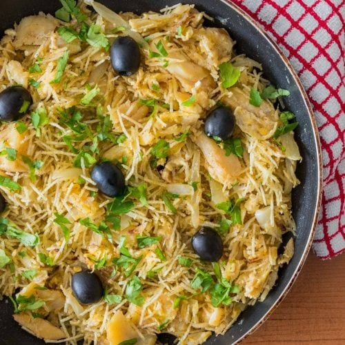

Homepage
Bacalhau à Brás
World's Best Bacalhau à Brás
Prep Time:
20 mins
Cook Time:
20 mins
Total Time:
40 min
Servings:
4
Bacalhau à Brás is a dish that perfectly reflects Portuguese cuisine. Simple in origin and preparatio, the taste of this recipe os the result of great ingredients and the appreciation of their flavours
Bacalhau à Brás Ingredients:
- 600g desalted codfish
- 200g straw potato
- 6 eggs
- 1 onion - sliced
- 4 garlic cloves
- 2 bay leaves
- black olives
- olive oil
- parsley - chopped
- salt
- black pepper
Step by Step:
Cook and shred the codfish:
- Take a pan of water, bay leaves and 2 cloves of garlic to boil.

- As soon as it boils, add the codfish.

- When it boils again, turn off the heat and set it aside for 15 minutes.

- Remove the cod from the water and let it cool.

- Once cooled, remove the skin and bones and shred the cod.

Prepare the Bacalhau à Brás
- Heat a frying pan over low heat in olive oil and saute the onion and 2 cloves of chopped garlic.

- Add the shredded cod and cook for a few minutes.

- Add the potatoes,mixing carefully.

- In a separate bowl, beat the eggs lightly with the help of a fouet. Add half of the beaten eggs to the codfish stew,mixing well.
Season with salt and black pepper to tate and let the eggs cook, always stirring the mixture.

- Turn off the heat and mix in the rest of the eggs. Sprinkle the dish with parsley and black olives. Serve it while hot.

Enjoy!